Aula 12: O Caribe, as colônias na América do Norte e o sistema de plantation
![]()
quinta-feira, 28 de maio de 2026
Acesse a apresentação
O Caribe, as colônias na América do Norte e o sistema de plantation
- Como se formou o sistema de plantation nas colônias inglesas e francesas do Caribe?
- Qual o papel dos holandeses nessa transição?
- Como se organizava o trabalho escravo nas plantações de açúcar?
- Quais as diferenças entre Jamaica, São Domingos e o modelo brasileiro?
Rivalidades imperiais e a entrada holandesa
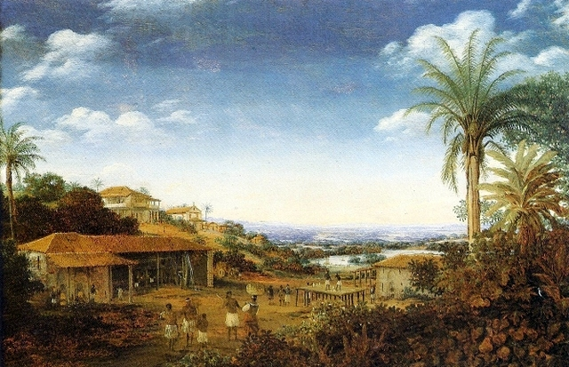
Engenho de Pernambuco, Frans Post, c. 1640. Fonte
{kind=link}
A União Ibérica e os holandeses
- 1580–1640: Portugal integrado à Coroa espanhola
- Holandeses: os mais agressivos rivais dos ibéricos no final do século XVI
- 1609: independência de facto das Províncias Unidas
- Companhia das Índias Orientais (1602): tomar o controle do comércio de especiarias na Ásia
- Companhia das Índias Ocidentais (1621): competir diretamente com os portugueses na África e na América
A ofensiva holandesa no Atlântico Sul
- 1624: captura temporária de Salvador (Bahia)
- 1627: tentativa de tomar Recife; captura da armada espanhola de prata
- 1630: captura de Recife e Pernambuco
- 1638: tomada de El Mina (Costa do Ouro)
- 1641: queda de Luanda e toda a região costeira de Angola
Impactos da ocupação holandesa
- Bahia substitui Pernambuco como principal zona açucareira
- Ressurgimento da escravidão indígena: bandeirantes paulistas capturam tribos do interior
- Interior do Brasil aberto à exploração pela primeira vez
- Brasil holandês: fonte de ferramentas, técnicas, crédito e escravos para o Caribe
- Fim do monopólio brasileiro nos mercados europeus de açúcar
O tráfico de escravos em perspectiva
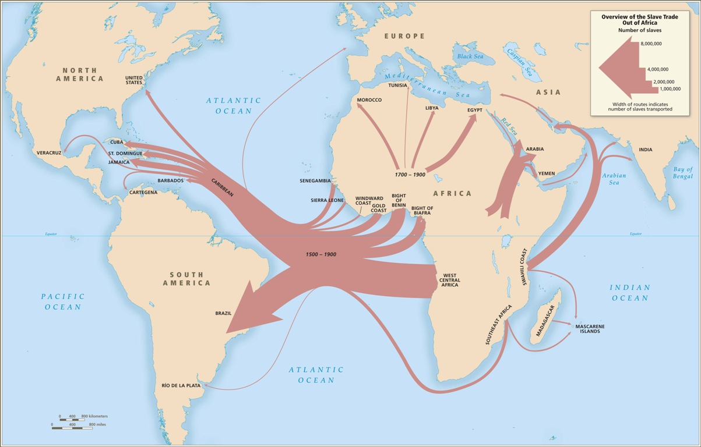
Visão geral do comércio de escravos para fora da África, 1500–1900. Eltis & Richardson. Fonte
Visão geral do comércio de escravos para fora da África (1500–1900)
- As estimativas do comércio marítimo transatlântico são mais robustas que as das rotas transaariana, do Mar Vermelho e do Golfo Pérsico
- Do fim do Império Romano até 1900: aproximadamente o mesmo número de cativos cruzou o Atlântico que deixou a África por todas as outras rotas combinadas
Fonte: SlaveVoyages.org (consultado em 27/05/2026)
Principais regiões onde os cativos desembarcaram
- O Caribe e a América do Sul receberam 95% dos escravos que chegavam às Américas
- Menos de 4% desembarcaram na América do Norte
- Pouco mais de 10.000 na Europa
- Total de embarques documentados: 9.371.001 cativos (88,5% do estimado)
Fonte: SlaveVoyages.org (consultado em 27/05/2026)
Principais regiões onde os cativos desembarcaram
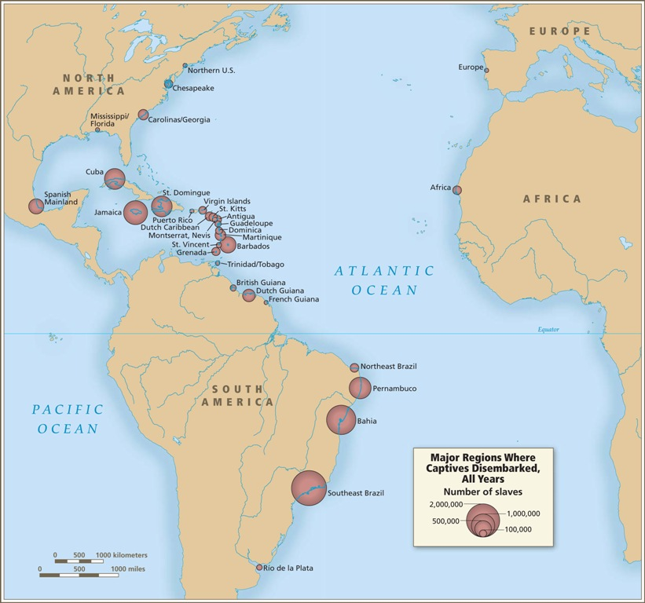
Principais regiões de desembarque. Eltis & Richardson. Fonte
Volume e direção do tráfico transatlântico
- Cativos de qualquer região da África podiam desembarcar em quase todas as regiões das Américas
- Mesmo cativos do sudeste africano (a região mais distante) podiam chegar à América do Norte, Caribe e América do Sul
- Dados baseados em estimativas do comércio total, não apenas em partidas e chegadas documentadas
Fonte: SlaveVoyages.org (consultado em 27/05/2026)
Volume e direção do tráfico transatlântico
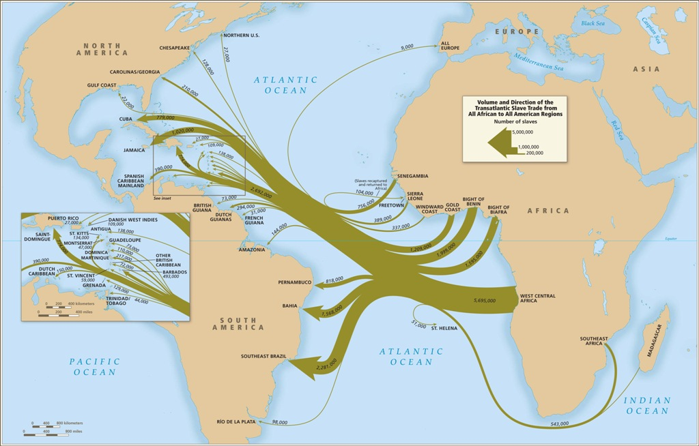
Volume e direção do comércio transatlântico de escravos. Eltis & Richardson. Fonte
Colônias inglesas nas Américas
Primeiras colônias (1620)
- Pouco incentivo real: sem investimento financeiro da Coroa
- Mercadores ingleses patrocinam a colonização para garantir o fornecimento de tabaco
- Pequenas Antilhas + Virgínia
- Servidão por contrato (brancos britânicos), sem tráfico de africanos escravizados
- Investimentos de capitães de navios e lojistas da metrópole

As Índias Ocidentais Fonte
1550–1600: a era dos piratas e corsários
- Importante papel para a colonização inglesa:
- Mapear pontos fortes e fracos
- Identificar as mercadorias
- Hábitos: fumo, chocolate, dormir em rede, comer churrasco, ter escravos
Os holandeses e a virada para o açúcar
- Década de 1640: agricultores holandeses com experiência em Pernambuco chegam a Barbados, Martinica e Guadalupe
- Trazem técnicas modernas de moagem e produção
- Oferecem crédito para compra de escravos africanos e maquinário
- Cargueiros holandeses transportam o açúcar para as refinarias de Amsterdã
1654: expulsão definitiva dos holandeses de Pernambuco → migração em massa para o Caribe
A crise do tabaco
- Virgínia começa a produzir tabaco → crise nos preços europeus
- O açúcar, já plantado em todas as ilhas, tornava-se uma “proposta muito mais viável”
- Os holandeses trouxeram o crédito necessário para importar o caro maquinário de moagem
- Forneceram também escravos africanos a crédito, de suas feitorias em El Mina e Luanda
Virgínia: da servidão à escravidão racial (1619–1705)
1. A transição: servidão → escravidão
- 1619: primeiros africanos (navio holandês) inseridos no sistema de servidão por contrato — não eram escravos
- Censos de 1623-25: africanos listados como servants; Statutes at Large (1619-1660) sem nenhuma entrada sob “slaves”
- Caso Brase (1625): recebia pagamento em tabaco — “não se paga salário a um escravo”
- John Phillip (1624): africano cristão testemunhou em tribunal como homem livre
- Anthony Johnson (década de 1650): negro proprietário de 250 acres e 5 servos — mostrava que africanos podiam ser senhores
- Sistema dual (1640-1660): servos por prazo e escravos convivendo; cristandade e contrato ainda eram vias de liberdade
- Caso John Punch (1640): brancos tiveram pena estendida; Punch condenado à servidão vitalícia — primeira sentença judicial de escravidão
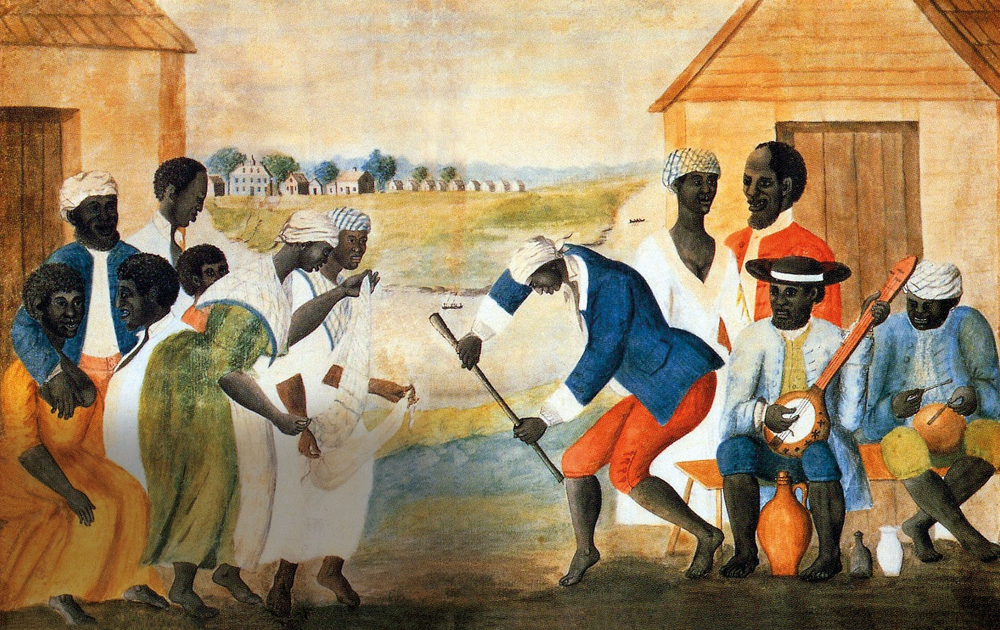
The Old Plantation, c. 1785-1795, atribuída a John Rose. Aquarela mostrando escravizados em atividades cotidianas na Virgínia colonial. Fonte
2. A legislação: fechando as portas da liberdade
- 1662: partus sequitur ventrem — filho segue condição da mãe (inversão do direito comum)
- 1667: batismo não altera a condição de escravo
- 1669: matar escravo “por acidente” durante correção não é crime
- 1670: negros e índios libertos não podem comprar servos cristãos brancos
- 1680: lei contra insurreições — escravos não portam armas, não saem sem certificado, 30 chibatadas se levantarem a mão contra cristão
- 1682: todo não-cristão importado = escravo para a vida, mesmo batizado depois
- 1691: escravos fugitivos podem ser mortos; casamento inter-racial = banimento; alforria = deportação
- 1705: código escravista completo — escravo sem papel = escravo vitalício; servo branco sem papel = 5 anos
2. A legislação: o código de 1705
- Seção 3: servo sem papel escrito = escravo para a vida; impossível reivindicar liberdade sem documento
- Seção 4: batismo não altera status — raça, não religião, determina a condição
- Seção 7: servo branco não pode ser chicoteado nu sem ordem judicial
- Seção 11: negros (mesmo cristãos) não podem comprar servos brancos; servo branco de senhor inter-racial = automaticamente livre
- Seção 37: escravo fugitivo pode ser morto ou desmembrado por qualquer pessoa — propósito: “instilar medo nos outros”
3. A construção racial: dividir para dominar
- Brancos e negros trabalhavam lado a lado, fugiam juntos, tinham relações interraciais
- Rebelião de Bacon (1676): servos, libertos e escravos unidos queimaram Jamestown — 80 escravos continuaram resistindo após a derrota
- Medo dos planters: aliança interracial = ameaça à colônia
- Estratégia legislativa: elevar servos brancos (proteções, privilégios) e rebaixar negros (escravidão, desumanização)
- Resultado: classe trabalhadora dividida pela linha de cor, protegendo a elite planter
3. A construção racial: síntese
“O uso da raça para separar trabalhadores com condições semelhantes não terminou na Virgínia do século XVII.” — McLaughlin, 2019, p. 32
- Escravidão não começou como instituição racial — foi construída por lei ao longo de 86 anos
- A separação racial serviu para dividir a classe trabalhadora e proteger a elite planter
- As sementes de Dred Scott v. Sandford (1857) foram plantadas no solo da Virgínia em 1705
Barbados: a transformação drástica
Barbados antes e depois do açúcar
| Indicador | 1645 (véspera) | Década de 1680 |
|---|---|---|
| Pop. branca | 37.000 | ~17.000 |
| Pop. escrava | 5.680 | 37.000 |
| Estrutura | Tabaco, pequenas unidades (<10 acres) | Açúcar, latifúndios, 8 mil ton/ano |
Barbados: concentração fundiária
- Dos brancos colonos imigrantes, apenas 2.000 haviam permanecido
- Sociedade dominada pela elite dos grandes plantadores
- 175 agricultores com 60+ escravos controlavam mais da metade dos escravos e das terras
- No final do século: 50 mil escravos — a região mais densamente povoada das Américas
- Mais de 1.300 escravos trazidos por ano
As ilhas francesas
- Martinica e Guadalupe: mudança mais lenta que Barbados
- Força de trabalho branca livre mais enraizada
- 1670: ~300 fazendas de açúcar, 12 mil toneladas métricas/ano
- Apenas 15 anos depois dos holandeses terem instalado o primeiro engenho francês eficiente
- 1683: ~20 mil escravos nas maiores ilhas francesas
São Domingos (Saint-Domingue)
- Colonização francesa na metade ocidental abandonada da ilha de São Domingos (década de 1660)
- Solos virgens extremamente ricos
- 1680: 2 mil escravos africanos, o dobro de habitantes brancos
- Desenvolvimento lento e constante até 1680
- Depois: expansão acelerada
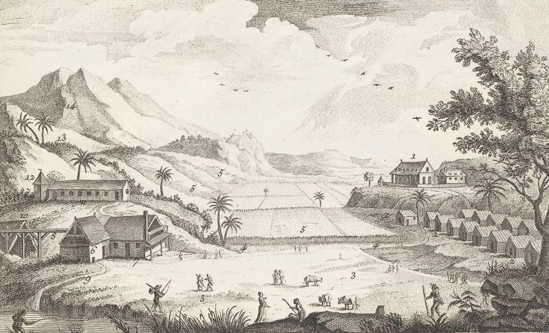
Habitation sucrière coloniale, 1762. Fonte
{kind=link}
A expansão do século XVIII
Jamaica
- Capturada pelos ingleses em 1655 (fracasso do ataque a São Domingos)
- Suplantou Barbados como maior produtor inglês na década de 1740
- Propriedade média: 99 escravos (década de 1740) → 204 escravos (década de 1770)
- 1768: 167 mil escravos, apenas 18 mil brancos → razão 10:1
- 36 mil toneladas de açúcar/ano (4x Barbados)
Novo padrão de exportação inglesa
- Colônias quebram o padrão de exportação inglesa apenas de tecidos de lã
- Exportação de: pregos, panelas, fivelas, ferramentas, têxteis
- Padrão multilateral de comércio: Inglaterra → África → plantations → colônias americanas do Norte
População escrava (1700) - Índias Ocidentais: 81% de negros - Virgínia e Maryland: 13%
São Domingos: a colônia dominante
- Suplantou Martinica como maior produtor francês
- Maior colônia produtora de açúcar da América
- Década de 1780: 600 mil escravos — quase metade do milhão de escravos caribenhos
- Exportações maiores que as Antilhas britânica e espanhola combinadas
- Mais de 600 navios por ano nos portos da ilha
- Maior produtora mundial de café (introduzido em 1723)
Jamaica × São Domingos: diferenças
- População livre de cor: significativa em São Domingos (~26 mil, quase metade da população livre); reduzida na Jamaica
- Diversificação econômica: São Domingos produzia café, índigo, algodão, cacau; Jamaica = monocultura açucareira
- Escala: São Domingos — 61 mil toneladas/ano; Jamaica — 36 mil
A expulsão dos holandeses
- 1652: guerra entre Inglaterra e Holanda
- Guerras seguintes destroem a supremacia naval holandesa
- Barreiras tarifárias imperiais contra os holandeses
- Último quarto do século XVII: ingleses e franceses rompem a dependência holandesa
- Impacto direto sobre os mercados de açúcar do Brasil:
- Açúcar brasileiro no mercado de Londres: 80% (década de 1630) → 10% (década de 1690)
O sistema de plantation
Robin Blackburn
- Historiador britânico ligado à New Left
- Pesquisas de grande fôlego: compreender a formação da escravidão e sua queda numa perspectiva macro
- Aproxima-se de Eric Williams: sistema escravista e lucros do tráfico garantiram o avanço econômico britânico e a Revolução Industrial
Diferenças de Blackburn em relação a Williams
- O capitalismo não tornou a escravidão obsoleta
- Luta dos escravizados pela liberdade → aproxima de C.L.R. James
- Escravidão = acumulação primitiva de capital
- Escravidão racializada desenvolvida nas ilhas do Caribe sob domínio inglês
- Formação de uma “economia atlântica”: trocas na Costa da África, Caribe, Américas do Sul e do Norte e Europa
Modalidades de economia camponesa sob o escravismo
- Camponeses não-proprietários
- Camponeses proprietários
- Atividades camponesas nos quilombos
- Proto-campesinato escravo
A transição para o tráfico ampliado (~1650)
- Queda no uso de servos de contrato: epidemias, conspirações, guerra civil na Inglaterra, preço alto do açúcar
- Sentimento racial em construção
- “Vantagens” dos africanos: maior expectativa de vida; custo de manutenção; conhecimento de agricultura tropical
- Leis britânicas legitimando a escravidão negra (já com caráter racializado em meados do século XVII)
Barbados: a virada demográfica
| Ano | Servos brancos | Escravos africanos |
|---|---|---|
| 1638 | 2.000 | 200 |
| 1655 | 8.000 | 20.000 |
Características do sistema de plantation
- Novo nível de organização e comercialização intensivas
- Trabalho escravo em turmas supervisionadas
- Trabalho noturno — 18 horas de trabalho
- Propriedades entre 50 e 300 escravos
- Mortalidade alta e taxa de natalidade baixa
Características do sistema de plantation
- Constante aumento na demanda do tráfico
- Regime de trabalho mais intenso e com maior vigilância
- Demanda de combustíveis: caro e difícil para os escravos se alimentarem
- Agricultura exaustiva diminui a produtividade da cana
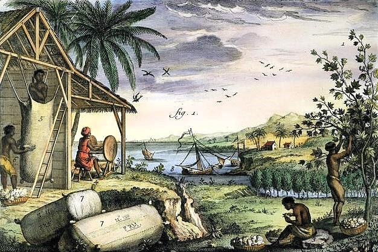
Escravizados cultivando e colhendo algodão nas Índias Ocidentais, 1751. Fonte
{kind=link}
Organização do trabalho nas plantações
- 50 a 60% dos escravos: trabalho de campo
- ~10%: moagem e refino do açúcar
- <2%: domésticos
- Restante: transporte, ofícios qualificados, muito jovens ou idosos
- Mulheres dominam as turmas de campo (~60% em todas as turmas)
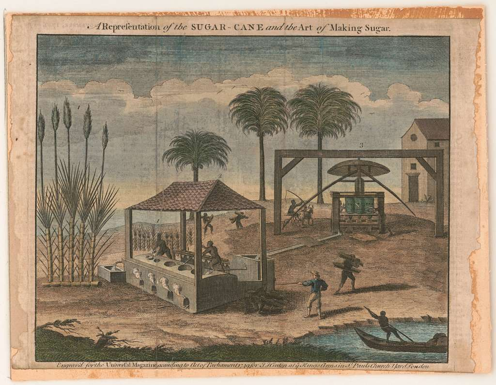
Fabricação de açúcar colonial. Fonte
Turmas de trabalho nas ilhas francesas
- Grand atelier: homens e mulheres jovens, boa compleição física
- Second atelier: físico menos capaz (recém-chegados, mães recentes, convalescentes)
- Petit atelier: crianças de 8 a 12/13 anos, tarefas simples
- 3/4 das mulheres na plantação → turmas do campo
- Homens: 10% nas refinarias, restante em ofícios qualificados
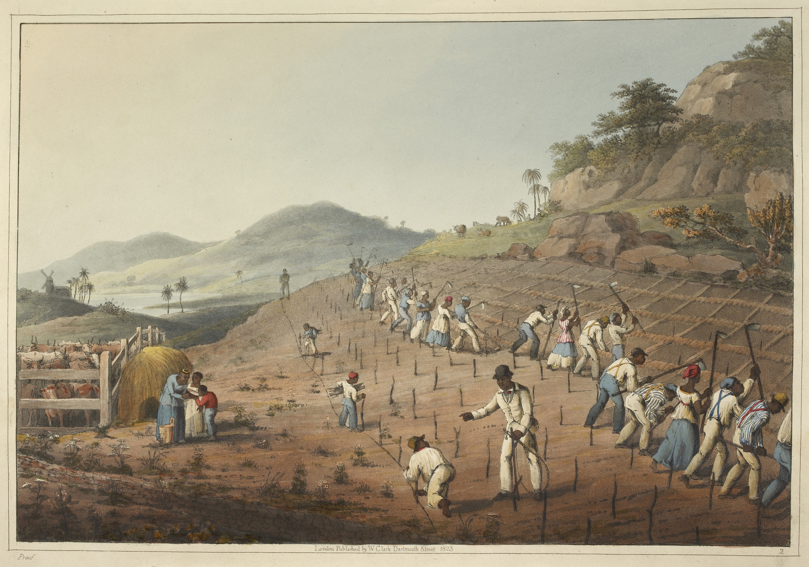
Abrindo buracos para plantar cana, Antígua, 1823. Fonte
{kind=link}
A eficácia brutal do sistema
“O sistema de plantation era o meio mais eficiente de produção de colheitas comerciais desenvolvido pelos europeus antes da Revolução Industrial.” (KLEIN & VISION III)
A eficácia brutal do sistema
- ~80% da população escrava economicamente ativa (vs. 55% em sociedades agrícolas atuais)
- Ausência de discriminação sexual nas tarefas de campo
- Crianças trabalhando a partir dos 8 anos
- Preços de escravos homens e mulheres saudáveis: iguais até a idade madura
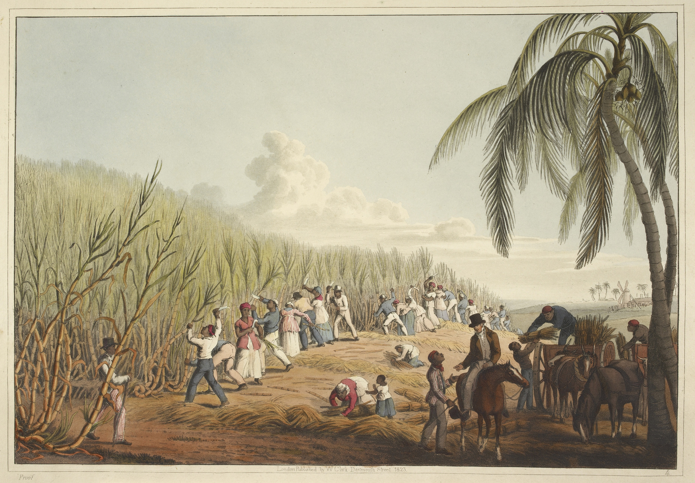
Cortando cana-de-açúcar, Antígua, 1823. Fonte
{kind=link}
Brasil: estrutura diferente
- Até final do século XVIII: 4 plantações agrupadas em torno de 1 moinho (engenho)
- 3 eram lavradores de cana (pequenos: ~10 escravos cada)
- 1 senhor de engenho (~70 escravos nos campos)
- Total: ~100 escravos por unidade de moagem (metade da Jamaica)
- Estação de moagem na Bahia: 3 meses mais longa que a estação de corte no Caribe
Ciro F. S. Cardoso: plantation como sistema
- Dois setores agrícolas: escravista (para o mundo) + camponês (subordinado ao primeiro)
- Baixo nível das forças produtivas; utilização extensiva dos recursos naturais e da força de trabalho
- Inseparável: sistema e capital mercantil
- minimização de gastos; autossuficiência; concentração de recursos para o mercado global
- tráfico de escravos; vigilância, repressão
Códigos legais para o controle de escravos
Code Noir, legislação inglesa e controle dos livres de cor
- Code Noir (1685): controle público, fora das habitations (plantations)
- Autonomia total dos senhores no governo doméstico
- Não trata do trabalho
- Crime contra a ordem pública: punição rígida
- Legislação inglesa: controlar a insurreição escrava
A exclusão dos livres de cor
- Nas colônias inglesas: livres de cor = minoria distinta, mesmo entre a pequena população livre
- Nas colônias francesas: mais significativos em São Domingos (metade da população livre), mas reduzidos nas outras ilhas
- No Brasil e na América espanhola: livres de cor = parte importante do mundo da plantation
- Essa diferença demográfica moldaria profundamente as dinâmicas sociais e políticas — e teria consequências decisivas na Revolução Haitiana
Atividade prática: SlaveVoyages
Explorando o tráfico atlântico de escravizados
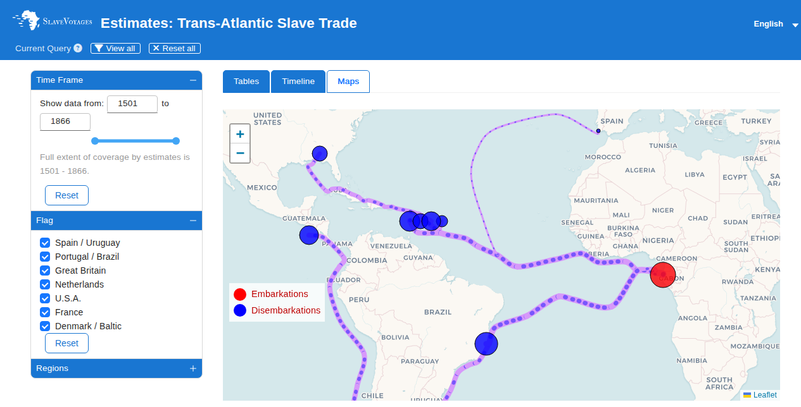
Página inicial do SlaveVoyages — Estimates
O que é o SlaveVoyages?
- Base de dados digital sobre o tráfico transatlântico de africanos escravizados
- Compila estimativas baseadas em registros documentais de viagens (1501–1866)
- Permite pesquisar, filtrar, visualizar e baixar dados sobre o tráfico
- Três modos de visualização: Tabelas, Linha do tempo e Mapas interativos
- Ferramenta fundamental para a historiografia da escravidão atlântica
Parâmetros de busca disponíveis
- Time Frame: período (1501–1866), com slider e campos numéricos
- Flag (Portadora nacional): Spain/Uruguay, Portugal/Brazil, Great Britain, Netherlands, U.S.A., France, Denmark/Baltic
- Regions → Embarkation Regions (regiões de embarque na África)
- Regions → Disembarkation Regions (regiões de desembarque nas Américas): subdivididas por império
Busca 1: Volume do tráfico para o Caribe britânico
Objetivo: visualizar a escala da escravidão nas ilhas produtoras de açúcar
Busca 1: Volume do tráfico para o Caribe britânico
- Time Frame: 1601–1800
- Flag: deixar todos selecionados
- Regions → desmarcar todos os Disembarkation Regions, exceto: Jamaica, Barbados, Antigua, St. Kitts, Grenada, Dominica, Other British Caribbean
- Mudar para a tab Timeline → observar o pico de desembarques
- Mudar para a tab Maps → visualizar os fluxos
Pergunta: Em que período o tráfico para o Caribe britânico atingiu seu pico? Como isso se relaciona com a transição do tabaco para o açúcar?
Busca 2: Comparação Caribe britânico vs. Saint-Domingue
Objetivo: comparar o volume de cativos nas duas maiores potências açúcarneiras
Busca 2: Comparação Caribe britânico vs. Saint-Domingue
- Time Frame: 1701–1800
- Flag: Great Britain + France (desmarcar os demais)
- Disembarkation Regions: marcar Jamaica, Barbados (britânicas) e Saint-Domingue, Martinique, Guadeloupe (francesas)
- Tab Tables → Rows: “50-year periods”; Columns: “Disembarkation regions”; Cells: “Only embarked”
- Observar os números absolutos por ilha
Pergunta: Qual ilha recebeu mais cativos no século XVIII? Como isso se reflete na produção açucareira descrita por Klein & Vision III?
Busca 3: Origens africanas — de onde vinham os escravizados?
Objetivo: mapear as regiões de embarque na África que abasteceram o Caribe
Busca 3: Origens africanas — de onde vinham os escravizados?
- Time Frame: 1651–1800
- Flag: manter todos
- Disembarkation Regions: marcar apenas as ilhas do Caribe (Jamaica, Barbados, Saint-Domingue, Martinique, Guadeloupe, Dutch Caribbean)
- Tab Tables → Rows: “50-year periods”; Columns: “Embarkation regions”
- Observar quais regiões africanas predominam em cada período
Pergunta: Qual região africana forneceu mais cativos para o Caribe? Houve mudança nas origens ao longo do século XVIII?
Busca 4: Holandeses — império de contrabando
Objetivo: evidenciar o papel holandês no tráfico e seu deslocamento para as Guianas
Busca 4: Holandeses — império de contrabando
- Time Frame: 1601–1800
- Flag: marcar apenas Netherlands
- Disembarkation Regions: manter todos
- Tab Tables → Rows: “50-year periods”; Columns: “Disembarkation regions”
- Tab Timeline → observar a curva ao longo do tempo
Pergunta: Para onde os holandeses direcionaram seus cativos após perderem o controle das ilhas? Como isso dialoga com a tese de Klein & Vision III sobre o papel holandês?
Busca 5: O minúsculo tráfico para a América do Norte
Objetivo: contrastar a escala do Caribe com a América do Norte britânica
Busca 5: O minúsculo tráfico para a América do Norte
- Time Frame: 1501–1866
- Disembarkation Regions: desmarcar tudo, marcar apenas Chesapeake, Carolinas/Georgia, Northern U.S., Gulf states, U.S.A. unspecified
- Tab Timeline → comparar visualmente com a Busca 1
Pergunta: Menos de 4% dos cativos desembarcaram na América do Norte. Como essa proporção ajuda a entender por que as colônias norte-americanas desenvolveram dinâmicas sociais tão diferentes das caribenhas?
Como exportar e discutir os dados
- Download Table: botão na tab Tables → exporta CSV para análise
- Download Timeline Data: botão na tab Timeline → dados anuais
- Screenshot dos mapas: use para documentar suas observações em sala
Bibliografia da aula
- KLEIN, Herbert S.; VISION III, Ben. O açúcar e a escravidão no Caribe nos séculos XVII e XVIII. In: A escravidão africana na América Latina e Caribe. Brasília: Editora Universidade de Brasília, 2015.
- McLAUGHLIN, Randolph M. The Birth of a Nation: A Study of Slavery in Seventeenth-Century Virginia. UC Law Journal of Race and Economic Justice, v. 16, n. 1, 2019, pp. 1–34.
- BLACKBURN, Robin. The Making of New World Slavery: From the Baroque to the Modern, 1492–1800. London: Verso, 1997.
- CARDOSO, Ciro F. S. (org.) Escravidão e abolição no Brasil: novas perspectivas. Rio de Janeiro: Jorge Zahar Editor, 1988.

Eric Brasil | Entre em contato | CCLHM0076 — História da América: colonização e resistência